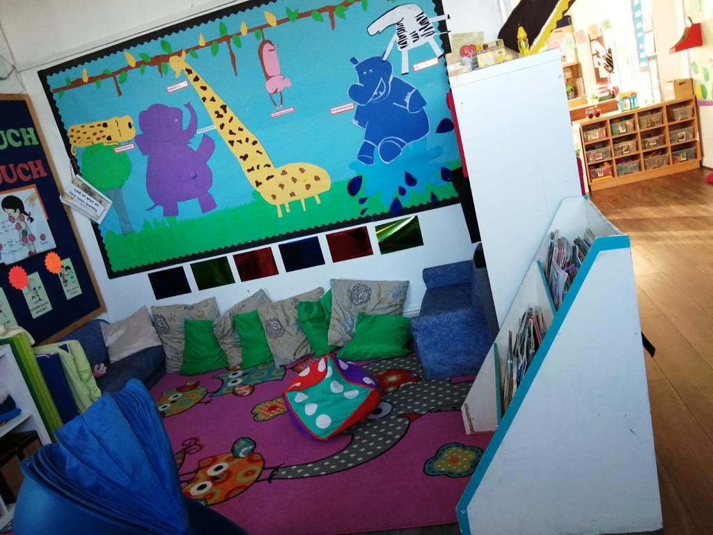

Choosing an early years setting means more than just picking a place near home. Parents look for a centre where their child can feel safe, make friends, try new ideas, and gradually become more independent. If you are searching for the best nursery in Crumpsall, Manchester, you should look beyond opening hours and location.
Lemon Tree Nursery is located at 72–74 Crescent Road, Cheetham Hill, Manchester, M8 9NT. It focuses on making learning fun, interactive and meaningful. Children get chances to explore, create and learn through play and nature activities. This Crumpsall Manchester setting guide looks at the factors parents should think about when choosing an early years setting.
What Should Parents Look for in an Early Years Setting?
The right choice is rarely based on one feature. A setting might have opening hours, facilities or a good location, but those things only describe part of the story.
A helpful way is to watch how children are supported during a day. Watch how the people who take care of children speak to them, how the activities help children develop, and how the daily plans are set up. Notice whether the space feels friendly and meets the needs of very young children.
It is also worth asking how the setting works with parents. Good communication can make a difference because parents understand their child better than anyone else. A useful conversation with staff can reveal more than a website description alone.
Why the EYFS Matters When Comparing Nurseries
EYFS is very important when you look at nurseries. Every early years provider in England has to follow EYFS. EYFS covers children from birth until they are five years old. EYFS focuses on seven areas: speaking and listening, physical development, personal and social development, reading and writing, numbers, world knowledge and creative arts. These seven areas make sure that every child gets a start no matter which nursery they go to.
It is important to ask how learning happens. Young children grow through play, relationships, conversations, movement, exploration, and repeated experiences. The quality of those experiences can matter more than how formal the activities look.
Learning Through Play Rather Than Pressure
Early learning does not have to be like regular school classes. Kids can build language by talking with an adult, start thinking about maths by sorting things, improve abilities by moving around, and show creativity through art or pretend play.
This is one reason parents should ask early years settings to describe how learning happens during a day. A good early years experience makes learning match what children like, rather than seeing growth as a bunch of worksheets or separate tasks.
A Visit Can Tell You What a Website Cannot.
- Look closely at how children act and how they interact.
- Check if the activities are easy to reach, interesting, and match the age of the children.
- Take note if the environment feels peaceful, friendly, and purposeful.
- Ask how staff track children’s development and share updates with parents.
- Find out how the settling-in process works for children.
- Ask how children who need reassurance are supported during their time at the setting.
- Consider whether the setting feels suitable for your child’s experience.
For families searching for an early years provision in Crumpsall Manchester, visiting shortlisted settings can make the decision much easier.
What Makes Lemon Tree Worth Considering?
Lemon Tree Nursery’s website lists activities that focus on discovery, nature, imagination, creative projects, and hands-on work that fit the interests and needs of children.
Lemon Tree’s approach recognises that curiosity is an important part of childhood. Children learn by asking questions, testing ideas, and watching what happens.
Parents should check how a setting makes its ideas real every day. When visiting Lemon Tree Nursery, ask staff to show examples of activities, explain how they monitor children’s progress, and describe how activities can be adapted for each child.
The best question is not simply, “What activities do you offer?” Instead, ask, “What does my child gain from those activities?”
Daily Practicalities
The centre’s own website currently shows opening hours from Monday to Friday, 8:30 am to 3:30 pm. It says the setting is open throughout the year. However, opening arrangements can change, so parents should confirm the hours directly before making any plans.
For families comparing childcare options, practical details deserve more attention than they sometimes get. Think about the journey at drop-off and collection times. Consider how the schedule fits around work or school.
How Can Parents Compare Their Options Fairly?
If parents are looking for a childcare provider, many options appear. Yet parents need a list of questions to compare those options fairly.
Consider these areas:
- Learning: How are activities planned around children’s development and interests?
- Staff: How do staff members create positive relationships with children?
- Safety: What safety rules and supervision arrangements are in place?
- Routine: Do the opening hours and daily routines fit your family’s schedule?
- Environment: Is there enough space for children to play, explore and move?
- Needs: How does the setting respond to children with different abilities, personalities and interests?
- Practicalities: What are the rules for registration, funding, meals and attendance?
Making the Right Choice for Your Family
Choosing a nursery in Crumpsall, Manchester is not about finding a website with pretty pictures. You want a place where your child feels safe and happy, but a spot where they can gain confidence, try new things, and ask questions without feeling pushed. A kind atmosphere like this helps children have the room to grow, learn at their speed, and become more on their own as they get ready for school.
Frequently Asked Questions
1. What age groups does Lemon Tree accept?
Lemon Tree teaches children who are between nine months old and five years old.
2. What learning approach does Lemon Tree follow?
Lemon Tree uses a play-based learning approach that follows the Early Years Foundation Stage (EYFS) framework, encouraging play, exploration, and meaningful activities.
3. Does the early years team provide after-school childcare?
Yes, the setting offers after-school programmes for children aged five to thirteen years. Sessions run from 3:00 p.m. to 6:00 p.m. and include homework help and Quran recitation.
4. Is support available for childcare?
Eligible working families may receive help with childcare through government schemes. Eligibility and the amount available depend on each family’s circumstances and the current rules.
5. How can I arrange a visit?
The simplest way is to contact Lemon Tree by phone or through their website. To check current availability and set up a time to come and visit the setting for yourself.
6. How does the UK rank in education?
The United Kingdom is known for having a strong education system and performs above the OECD average in reading, mathematics, and science according to PISA 2022.
7. How can parents check school ratings in the UK?
The reliable starting point is the school’s latest Ofsted report alongside the school’s published performance data. Exam results, attendance figures, and similar official measures.